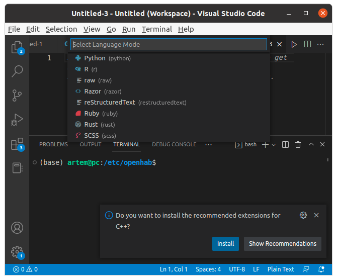
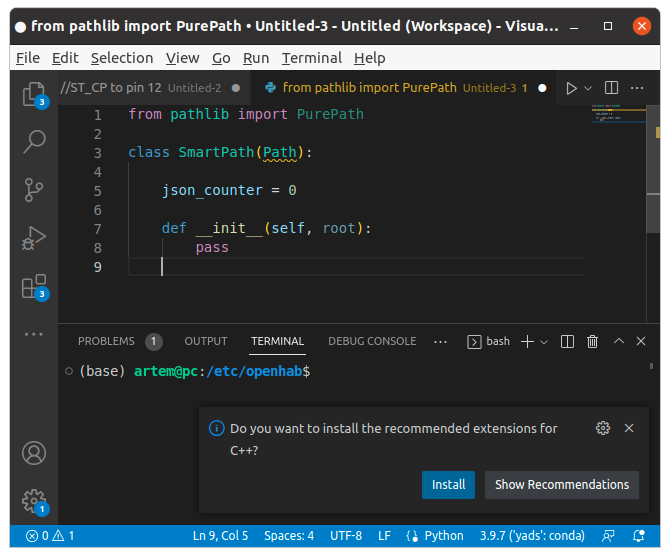
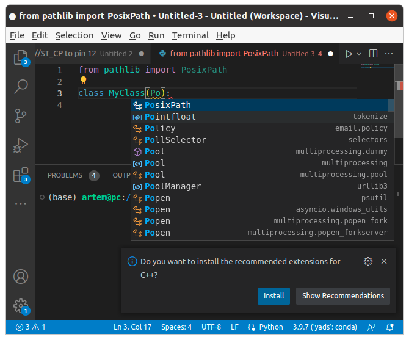
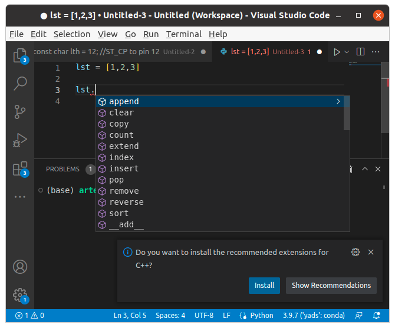
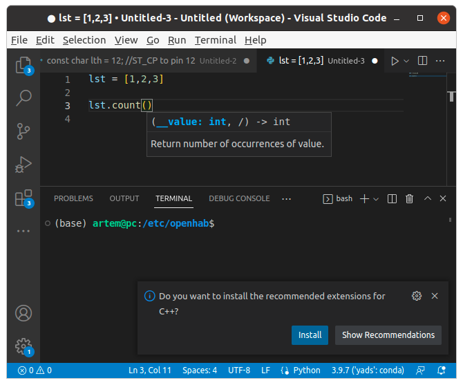
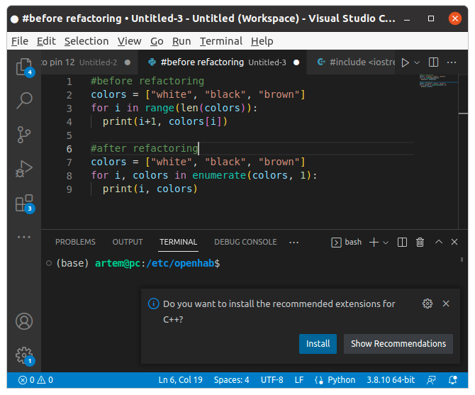

Среда разработки¶
Среда разработки или, если дословно с английского, интегрированная среда разработки (Integrated Development Environment, IDE) — это приложение, которое позволяет разрабатывать код более эффективно, чем в текстовом редакторе, например Kate или Notepad++. Среда разработки объединяет в себе несколько функций, которые обычно разработчики хотят в ней увидеть: автоматизация написания кода, подсветка синтаксиса, автоматическое дополнение кода, форматирование, рефакторинг, компиляция, сборка и отладка. Также среды разработки поддерживают основные инструменты разработчиков в виде дополнений, так, можно подключить плагины, которые позволят пользоваться git и прогонять тесты прямо из среды разработки. Сейчас сложно найти среды разработки, которые имеют поддержку только одного языка программирования. Существуют среды разработки, специализирующиеся на одном языке программирования для серверных приложений (backend), такие как PyCharm, но даже в них есть поддержка JavaScript, HTML и других инструментов для разработки приложений пользователя (frontend). Это необходимо, так как есть понятие fulstack разработки, и переключаться между средами для разработки отдельно серверной и пользовательской частей было бы неудобно. В таких средах разработки, как VisualStudioCode и Eclipse, существует поддержка, наверное, всех возможных языков программирования, языков разметки, форматов сериализации данных и так далее. Поддержка устанавливается как дополнение, при этом визуальный интерфейс остается без изменений, что положительно влияет на разработку, так как мы не тратим время на привыкание к другому интерфейсу.

Подсветка синтаксиса¶
Подсветка синтаксиса — достаточно распространенная функция, поддерживающаяся даже в текстовых редакторах, которые нельзя отнести к IDE. Подсветка синтаксиса использует свойство человеческого глаза, который лучше (быстрее) воспринимает цвет, а не смысл написанного. Поэтому идея подсветки кода в том, чтобы разделить код на сущности, которые принадлежат к одним группам (функции к функциям, переменные к переменным) и подсветить их одним цветом.

Автодополнение кода (завершение кода)¶
Среда разработки понимает, какие имена переменных, функций и классов доступны в данном приложении, и использует их, чтобы разработчик мог выбрать подходящий объект при наборе неполного имени:

Автодополнение бывает не особо полезно, когда мы знаем название объекта, часто написать его быстрее, чем выбрать из списка. Но если мы забыли название метода или поля класса, мы можем легко его вспомнить, если увидим название в списке, без вызова документации по классу.

Кроме автодополнения кода существует такое понятие, как «интеллектуальное дополнение кода». Например, если мы написали название метода, среда разработки может подсказать, какие аргументы можно передать в этот метод. Так как мы ничего не писали, это уже нельзя отнести к автодополнению кода. В VSCode это реализовано в виде IntelliSense.

Рефакторинг¶
Рефакторинг — это изменение формы кода без изменения содержания. Мы можем объединить повторяющийся код в функцию или метод, назвать переменные более понятным образом, изменить цикл и совершить другие действия, которые улучшают читаемость кода, но не поменяют то, что он делает. Это и будет рефакторингом.

Компиляция¶
Среды разработки могут выполнять все действия, чтобы запустить код или скомпилировать его в исполняемый файл. Эти действия — такие же, как и при ручном запуске или компиляции. Следует помнить, что среда разработки выполняет некоторые действия неявно, например, осуществляет выбор виртуального окружения, в котором могут быть установлены зависимости, не прописанные нигде явно. Это может приводить к тому, что код не запустится у другого разработчика без дополнительных действий. Часто начинающие просто «нажимают зеленую стрелочку» без понимания, что именно происходит после нажатия. Вы как разработчики, прошедшие этот курс, должны понимать, что запуск и сборка кода может происходить там, где не установлена та же среда разработки, что и у вас. Поэтому все инструкции по запуску, компиляции и сборки проекта должны быть отражены в соответствующих файлах, например, make-файлах. Среда разработки должна использовать эти файлы при работе. Проще говоря, среда разработки должна упрощать разработку и не подменять ее этапы. Сборка из командной строки становится незаменимой, когда нужно собрать множество проектов, которые должны работать в рамках одной системы. Нужно также помнить, что среды разработки гораздо разнообразнее, чем командные строки, и пользователь, скорее всего, воспользуется командной строкой вместо того, чтобы устанавливать новую среду разработки.
Настройка окружения под себя¶
Вы можете приобрести какие-то привычки при написании кода. Например, использовать табуляцию для отделения блоков кода, при том что общепринятым способом делать отступы являются 4 пробела. Т.е. вы забираете код с git, правите его, и часть строк вместо отступов с пробелами получаются с табуляцией. И даже если это не вызовет ошибку при исполнении кода (в Python вызовет), это будет все равно будет неудобно, так как длина табуляции может быть различна для различных редакторов. Мы можем настроить среду разработки так, чтобы когда мы нажимаем на Tab, вместо табуляции подставлялось 4 пробела (или столько, сколько принято для данного проекта). Поэтому среда разработки может взять на себя часть функций по редактированию кода, а разработчик продолжит работать так, как привык. Это упрощенный пример.